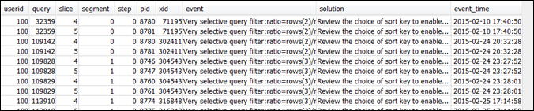

查看查询警报
要使用 STL_ALERT_EVENT_LOG 系统表来识别和纠正查询的潜在性能问题，请按照下列步骤操作：
-
运行以下命令以确定查询 ID：
select query, elapsed, substring from svl_qlog order by query desc limit 5;检查
substring字段中的截断查询文本来确定选择哪些query值。如果您已多次运行查询，请使用具有较低elapsed值的行中的query值。这是已编译的行。如果运行多个查询，则可以增大 LIMIT 子句使用的值，以确保将查询包含在内。 -
从查询的 STL_ALERT_EVENT_LOG 中选择行：
Select * from stl_alert_event_log where query = MyQueryID; -
评估查询的结果。使用下面的表找到已发现的任何问题的可能解决方案。
注意
并非所有查询都在 STL_ALERT_EVENT_LOG 中拥有行（仅限存在已发现的问题的查询）。
问题 事件值 解决方案值 建议的解决方案 查询中表的统计信息缺失或过期。 缺少查询计划程序统计信息 运行 ANALYZE 命令 请参阅 表统计数据缺失或过时。 查询计划中存在嵌套循环联接（最不优化的联接）。 查询计划中的嵌套循环联接 查看联接谓词以避免笛卡尔积 请参阅 嵌套循环。 扫描跳过了相对大量的标记为已删除但未抽空的行或已插入但未提交的行。 已扫描大量已删除的行 运行 VACUUM 命令以回收已删除的空间 请参阅 虚影行或未提交的行。 为进行哈希联接或聚合重新分配了超过 1000000 的行。 在整个网络中分布了大量行：分配了 RowCount 行以处理聚合 查看选择的分配键以并置联接或聚合 请参阅 非最优数据分配。 为进行哈希联接广播了超过了 1000000 个行。 已在网络中广播大量行 查看分配键的选择以并置联接，并考虑使用分配表 请参阅 非最优数据分配。 DS_DIST_ALL_INNER 重新分配方式已在查询计划中指明，此方式强制实施序列执行，因为整个内部表已重新分配到单个节点。 查询计划中哈希联接的 DS_DIST_ALL_INNER 查看分配策略的选择，以分配内部表而不是外部表 请参阅 非最优数据分配。